FBMN export to Cytoscape
Introduction to FBMN¶
The main documentation for Feature-Based Molecular Networking can be accessed here. See our article.
The documentation for FBMN using Cytoscape is provided below.
Feature-Based Molecular Networking in Cytoscape¶
Recommended Citations
This work builds on the efforts and tools from our many colleagues, please cite their work:
Nothias, L.-F., Petras, D., Schmid, R. et al. Feature-based molecular networking in the GNPS analysis environment. Nat. Methods 17, 905–908 (2020).
Wang, M. et al. Sharing and community curation of mass spectrometry data with Global Natural Products Social Molecular Networking. Nat. Biotechnol. 34, 828–837 (2016).
Cytoscape is an open source software platform used to visualize, analyze and annotate molecular networks from GNPS. Cytoscape is available for download from here. The instructions were created with Cytoscape 3.7.
Shannon, P., et al. (2003). Cytoscape: a software environment for integrated models of biomolecular interaction networks. Genome Res, 13(11), 2498-2504. doi:10.1101/gr.1239303
The citations from the mass spectrometry processing tools you used [MZmine2, OpenMS, MS-DIAL, MetaboScape,XCMS, and mzTab-M format.
Downloading Cytoscape Files from GNPS¶
The first step is to download the input file (.graphML file format) for import into Cytoscape. From the job status page in the Feature-Based Molecular Networking workflow, click on Download Cytoscape Data. Save and unzip the downloaded file.
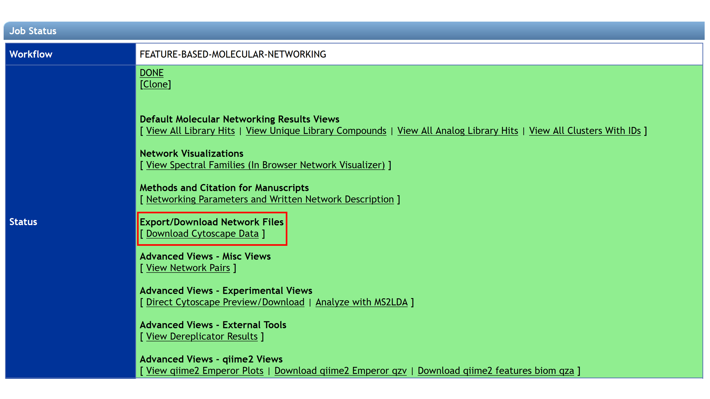
Unzip the file and the resulting folder will look like this:
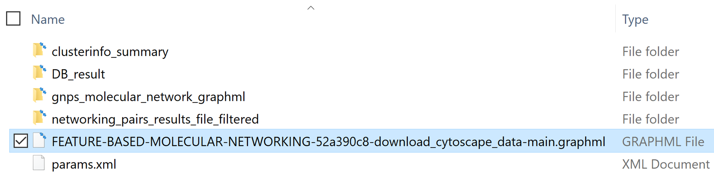
Import the molecular network in Cytoscape¶
To import the network file into Cytoscape: * in Cytoscape click on Import Network from File System and then choose the .graphml file. * Alternatively, you can drag and drop the .graphml file into Cytoscape.
The imported network will be displayed in the main window. In the Control Panel (left panel), in the Network tab, rename the network with right-click and select Rename Network.
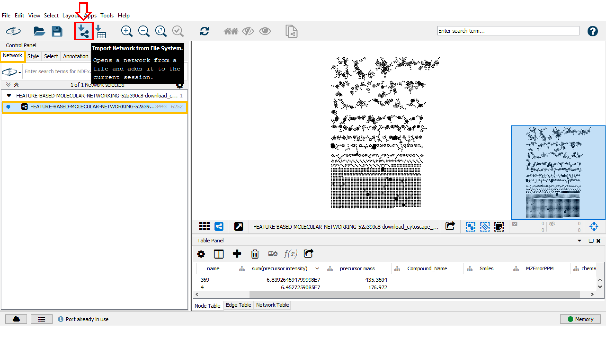
You can import the table file into Cytoscape. Click Import Table from File System, navigate to the “DB_result” folder and select the .csv file. Lastly, click OK in the opened window.
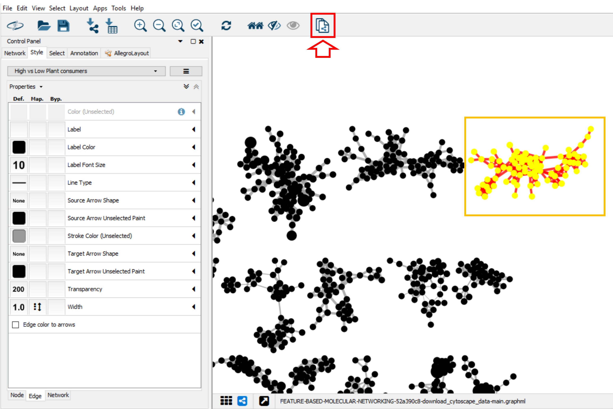
Import supplementary annotations in Cytoscape¶
Cytoscape allows to map additional annotations such as those produced by other workflows on GNPS. See the documentation for DEREPLICATOR, NAP, MS2LDA, MolNetEnhancer for more details.
The FBMN workflow makes possible to map the annotations (molecular formula, cross collision section) made by the processing software used for FBMN (MZmine, XCMS, MetaboScape, MS-DIAL, Progenesis QI), or other third party software tool that processed the same .MGF/.MSP file. In addition it is possible to import any feature metadata and statistical results you are interested in.
Regardless of the tool and information to map, the importing procedure follows these steps:
- Obtain the annotation table that needs to be mapped. This table must contain a column that contains the identifier that matches the name column in the network. This identifier corresponds to the SCANS or FEATURE_ID in the .MGF/.MSP file.
- Verify that the identifier are indeed matching between the network and table.
- Import the table in Cytoscape. Go to Menu / Import / Import Table from File System.
- In the preview window, click on the header of the identifier column to set the meaning to Key (a key logo shows up)
- Import the table and map the annotation into the molecular network. [IMPORTANT] If columns already exist in the network, they will be replaced by the imported table ! Rename the header(s) of the imported table if necessary.
- Explore the annotation in the molecular network (see below).
Rotation of the Network¶
To rotate the entire molecular network choose the Layout tab and click Node Layout tool. In the opened window, uncheck the Selected Only box to rotate the entire network and move the blue bar to 90. You can also select specific subnetworks and rotate them by checking Selected only.
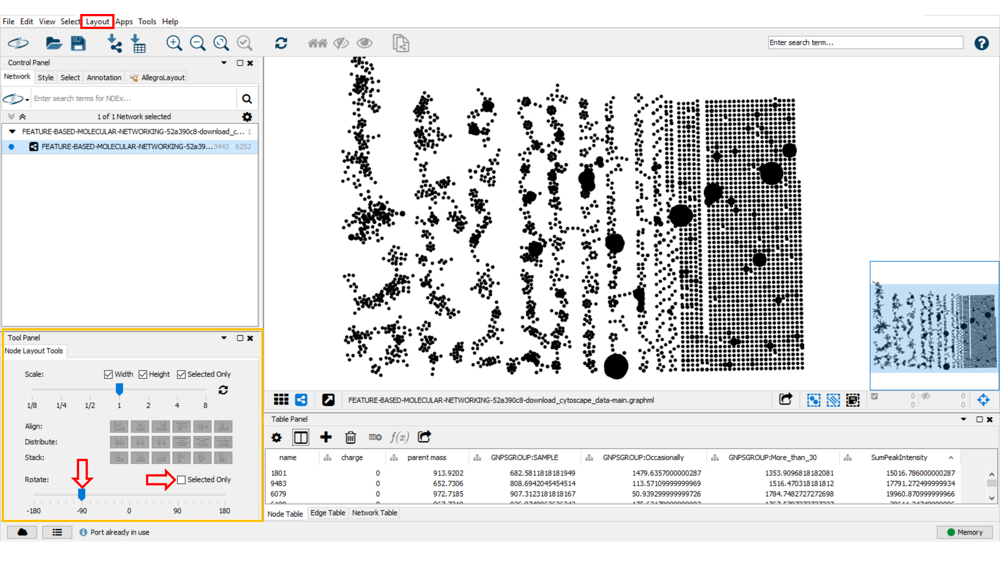
Table Panel Visualization Data¶
For advanced network visualisation and data analysis, you may click on Table Panel and select node or edge column information (network metadata) to be displayed. For example, in the Node Table, you can select the "Compound_name" (name of the spectral library match), the "parent mass" (precursor ion mass), the "RTconsensus" (retention time for the node), "MZErrorPPM" (ppm error with the spectral library match) and any attributes of interest in your in Node Table (node metadata).
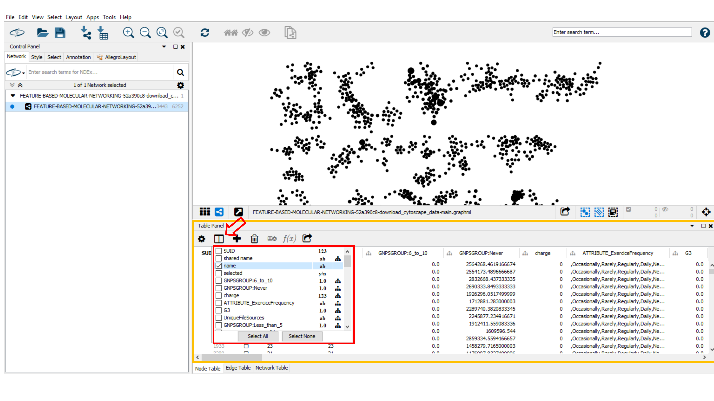
Create a New Style¶
A style can be created by clicking on Create New Style and a style name can be specified (e.g. "High vs Low Plant Consumer"). The created style can be exported by going in the main menu to File > Export > Styles to File, or a previous style can be imported by clicking on Import > Style From File in the File menu.
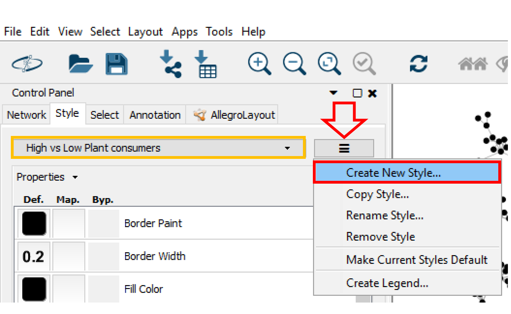
Edit the Style¶
Node Styling¶
Label¶
In the Control Panel (left panel), go to the Style tab. Within the Node sub-tab, the properties of the node style can be modified. For example, you can choose the precursor mass as node label for the molecular networks [you need to select Passthrough Mapping as the Mapping Type]. Go to Properties to display more style properties.
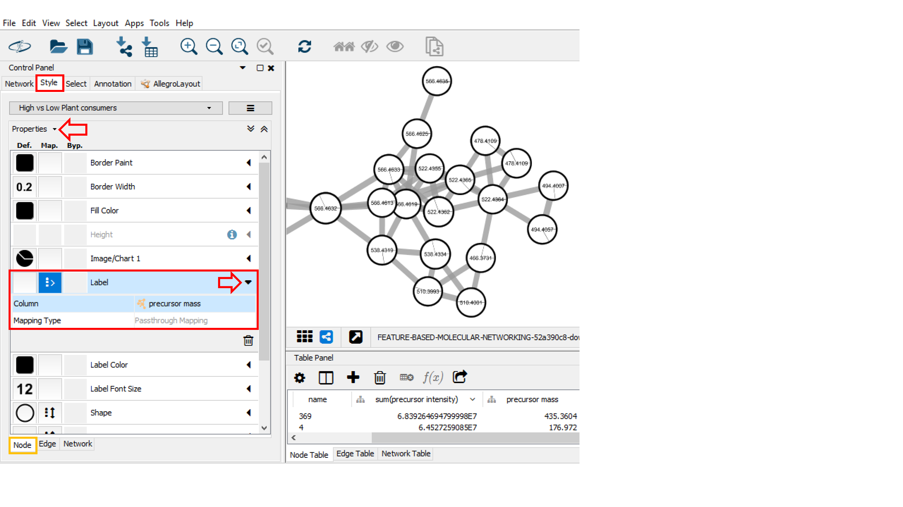
Size¶
In order to match the label size to the node size, go into Style panel, at Label Front Size option, select “SumPeakIntensity” or the “number of spectra” (as selected for node size) as Column and Continuous Mapping as Mapping Type. As described above, begin by setting the value for minimum and maximum node size value with the button Set Min and Max, then choose the same continuous mapping as used for the node size.
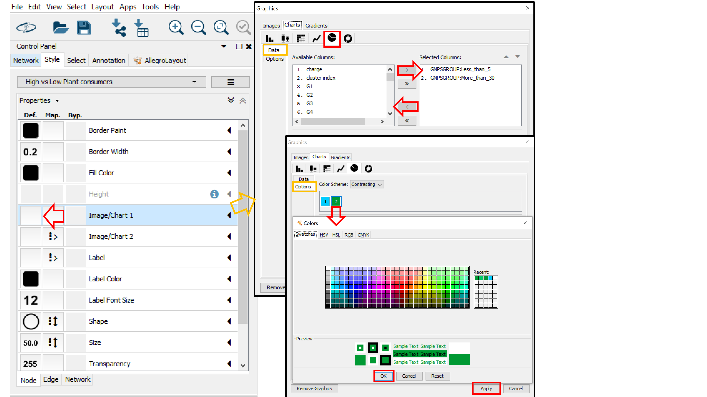
Pie charts¶
If you used a metadata table, the node table will contain group columns for each group specified in the metadata table. The group columns starts with "_GNPSGROUP__" and will consist of the mean (default and recommended) or summed intensity of the ion across the group's samples based on the MS1 feature table (LC-MS peak area). This group columns can be used to visualize groups as pie charts in the network.
To start visualizing pie charts on node for the groups, click on the left box (Def column) for the Image/Chart1 node property. Choose the Charts tab and select the Pie Chart Icon. Now, in the Data sub-tab, select the group columns you are interested in visualizing in the Select Columns box (e.g. "GNPSGROUP: Less_than 5" (low plant consumers) and "GNPSGROUP:More_than_30" (high plant consumers)). Click on Options (under Data) to choose colors for the Groups (groups are numbered based on their position in the Selected Columns box). Click Apply when you are done with your selection.
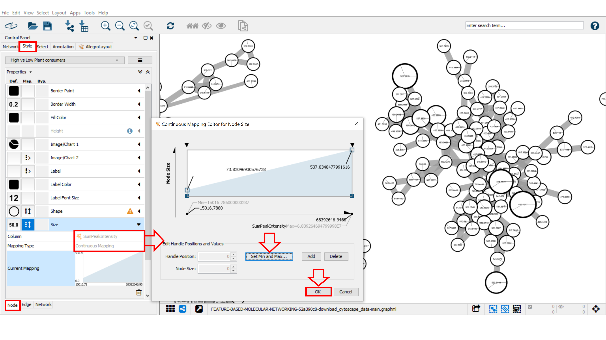
Edge Styling¶
Width¶
To aid in the visualization of individual node similarities within a cluster, the cosine score is displayed as an edge. The cosine scores define similarity between two MS/MS spectra. Scores ranging from 0 (totally dissimilar) to 1 (identical). The edge thickness can be used to visualize the cosine score value between related nodes. For this we will use the cosine-score-based continuous mapping for the edge thickness. Go to the Style tab, and the Edge sub-tab. From the Width property drop down menu, select "cosine_score" for the Column and Continuous Mapping for the Mapping Type. Double click on the Continuous Mapping area of the menu to adjust the thickness of the edge. Click OK to apply the setting changes. Optimise the minimum and maximum value for the continuous mapping.
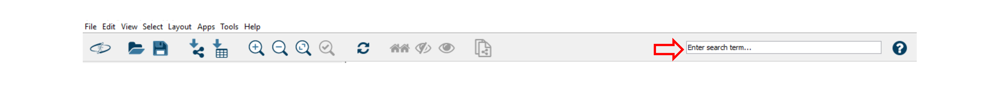
Mining information in the network¶
Sub-network creation¶
To separate one or multilple specific desired network(s), press “ctrl” or “command” (windows or MacOS, respectively) at the same time drag the mouse to select the network(s). Then, click on the symbol as shown below. Automatically, the sub-network is created. For going back to the main network, go into the Control Panel, select Network and then choose the main network.
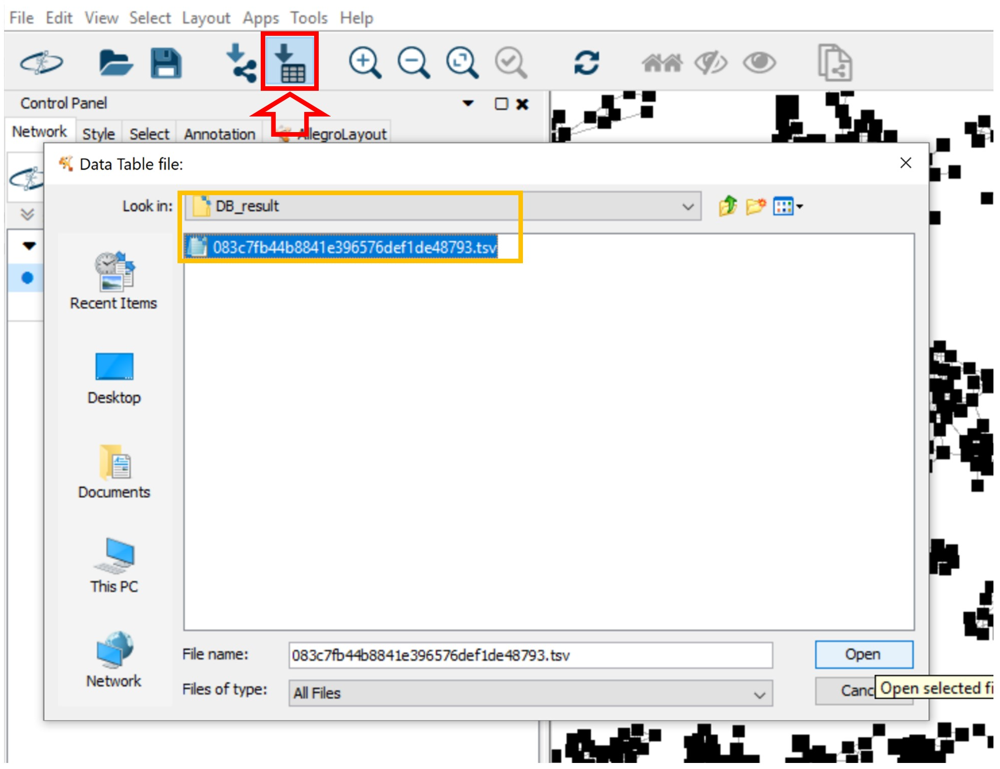
The Toolbar function¶
The Cytoscape's toolbar can be used to search nodes or edge metadata (e.g., "shared name"). Note that this feature is very slow, especially with large networks. The list of nodes in the Note Table will be updated. You can select nodes of interest, perform right-click for Select nodes and then click on the + magnifier in the main menu to perform a zoom on the selected node.
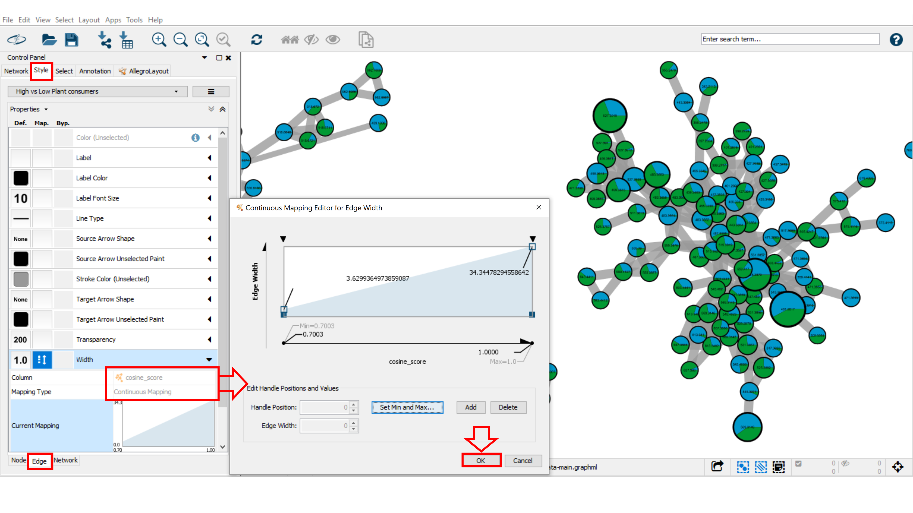
The Select function¶
The Select function can be used to create a selection of nodes and/or edges based on their metadata and/or network topology. Go to the Control Panel and click on Select tab. Then, click on the "+" button and choose between column, degree, or topology filter(s) to add different filter properties. The "x" button deletes the corresponding property. For each filter property, various options are provided depending on the column type (numeric column: is, is not, between; for string column: contains and does not contain. Here, we create annotation filter that selects nodes by the spectral library match with 10 ppm maximum error between precursor ions ("MZErrorPPM" from 0 to 10). By default, the filter should be automatically applied to the network, otherwise click Apply. Under the Filter tab, the number of nodes meeting the filter property variables (here 160 nodes) will be selected. These nodes are automatically selected and highlighted in yellow in the network.
Filters are very powerful network analysis tools that can be modified, saved and exported. To rename, remove, create a new filter, or other options, click on the right button beside the Filter list menu. The list of available Filters will appear in the top part of the panel.
For more details and options, follow this link.
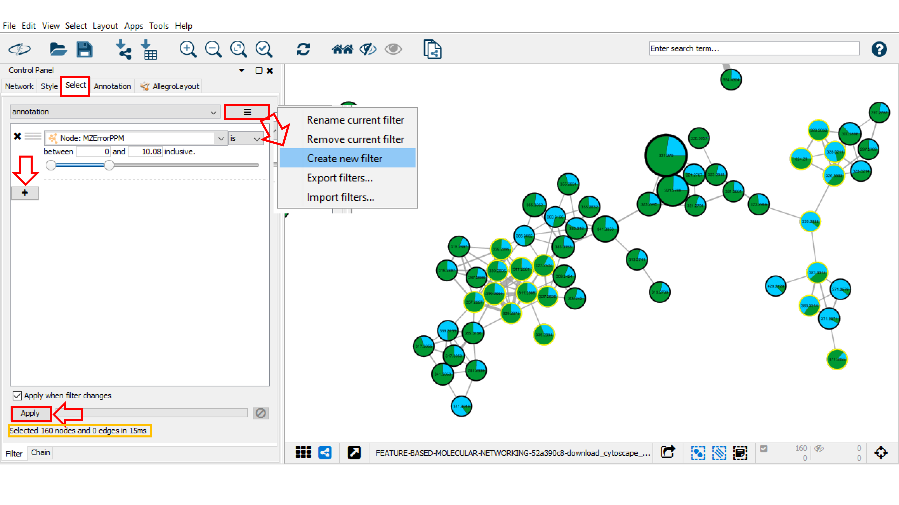
Bypass mode for style property¶
A bypass could be applied to selected nodes and/or edged by going into the Style panel, and clicking on the Byp. column for the property you want to change such as Border paint and Border Width. For modifying or removing the bypass property, select the nodes of interest, click right and choose Remove Bypass or set Bypass option.
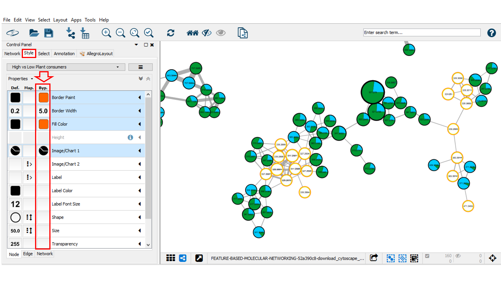
Drawing structure in nodes¶
The chemical structures can be visualized in the node using chemViz2 bioinformatics plugin for Cytoscape (http://www.cgl.ucsf.edu/cytoscape/chemViz/). First, the chemViz2 plugin has to be installed. To do that, go to the Apps tab in the main menu, then open App Manager. In the Install Apps tab click on chemViz2 and install it by clicking Install. For more information about chemViz2, refer to the information available on the chemViz2 website.
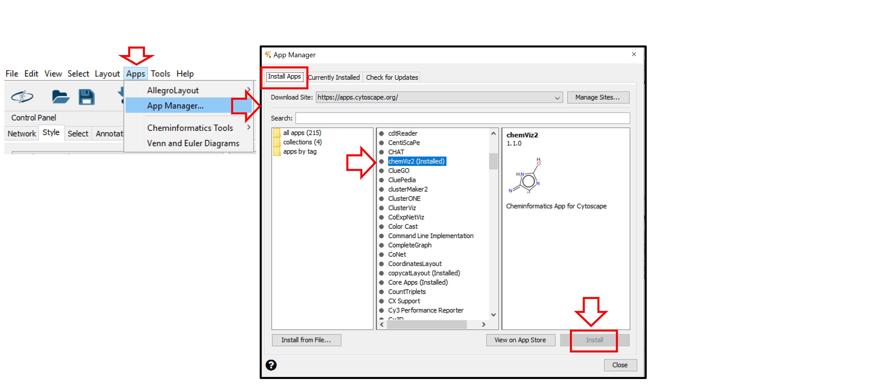
Once installed, chemViz2 can be used to display chemical structures on nodes. First, you will have to verify that chemViz2 is properly parameterized. Select Apps in the main menu, go to Cheminformatics Tools and click Settings. In the Attribute Settings section, choose node.Smiles for SMILES Attribute and/or node.INCHI for InCHI Attribute. Apply it by clicking OK.
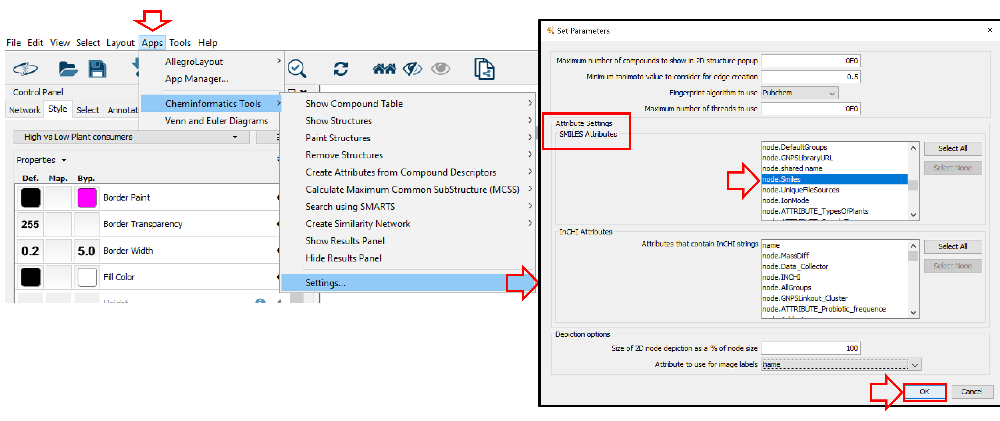
Finally, to draw structures in the nodes, return to Apps > Cheminformatics Tools > Paint Structures and select on all nodes or on selected nodes. Visualize the results. If needed, create a dedicated style to facilitate structure visualization.
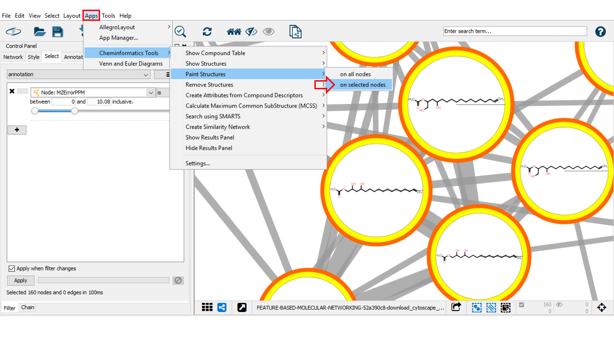
Mapping other node information¶
Cytoscape enables to map informations obtained from the other workflows/softwares. Visualize this annotation by creating novel styles and changing its properties.
Video Tutorial FBMN and Cytoscape¶
Our tutorial on running the FBMN analysis on GNPS including a Cytoscape demo.
See our tutorial on using MZmine2 for the FBMN analysis of a cohort from the American Gut Project.
Join the GNPS Community !¶
- For feature request, or to report bugs, please open an "Issue" on the CCMS-UCSD/GNPS_Workflows GitHub repository.
- To contribute to the GNPS documentation, please use GitHub by forking the CCMS-UCSD/GNPSDocumentation repository, and make a "Pull Request" with the changes.
Page Contributions¶